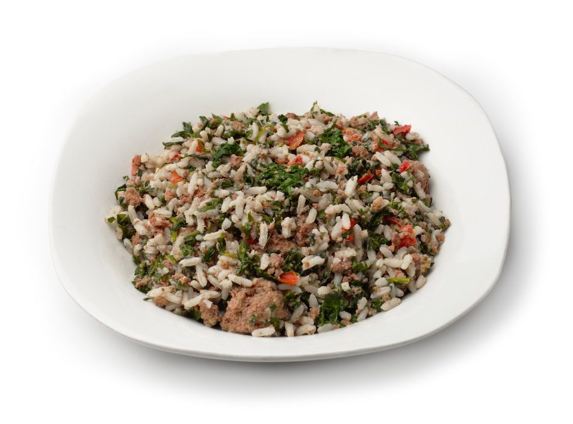

Power rice

You broke, but tired of eating plain rice?
Try to cook this new enhanced version!
Ingredients:
- Long grain white rice
- 1 Carrot
- Spinach
- Red and yellow bell peppers
Steps to cook:
- Wash rice until the water is clear
- Pour 500ml of water in deep pan and place in on the heater
- Slice all vegetables as you wish
- Put everything in pan and wait until it boils
- Lower the heat to medium, and boil for 10-15 more minutes
- Turn off the heat and start crushing everything with potato masher
its best recommended that you combine power rice
with other recipe called steak
Go back